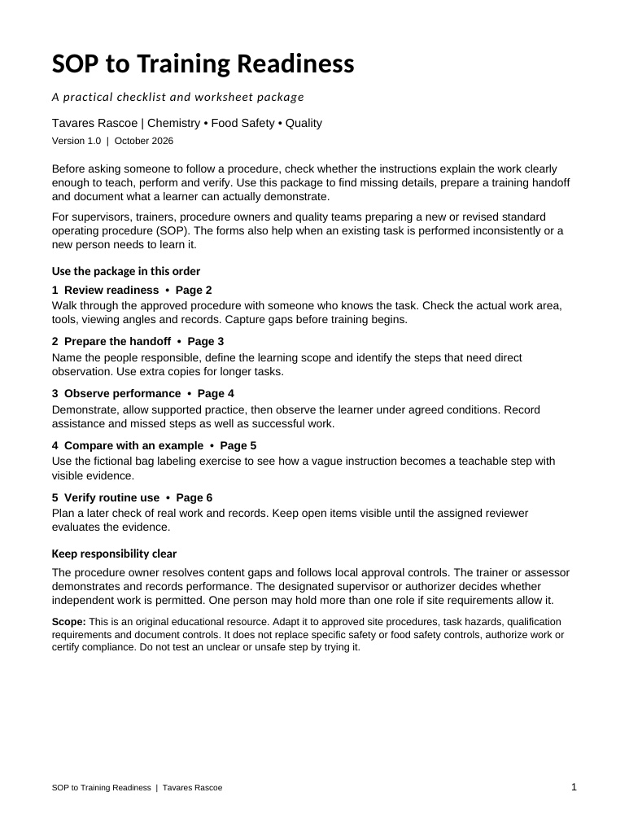

Start with clear responsibilities
Set the scope and distinguish the procedure owner, trainer or assessor, and independent work authorizer.
Quality practice / Resource 01
A practical checklist and worksheet package for turning clear procedures into teachable, observable work.
Download the complete package ↓PDF · 6 pages · 206 KB · Original educational resource

Before asking someone to follow a procedure, check whether the instructions explain the work clearly enough to teach, perform and verify.
For supervisors, trainers, procedure owners and quality teams preparing a new or revised SOP—or reviewing a task that is performed inconsistently.
Set the scope and distinguish the procedure owner, trainer or assessor, and independent work authorizer.
Check 12 practical requirements against the approved source and actual work conditions. Record gaps, owners and recheck decisions.
Define prerequisites, observable results, stop conditions, assessment conditions and the evidence to retain.
Record coaching, missed or unobserved steps, teach-back responses and the decision for the assessed scope.
An entirely invented desk exercise with empty bags and TRAINING ONLY tokens shows how vague instructions become visible performance criteria.
Define a later check of routine work and records. Keep immediate containment separate from the evidence needed to close an action.
Using the resource
Attendance, demonstrated competence and authorization to work independently are different decisions. The package gives each a clear place in the handoff and observation record.
Make readiness—and remaining gaps—visible.
Download PDF ↓